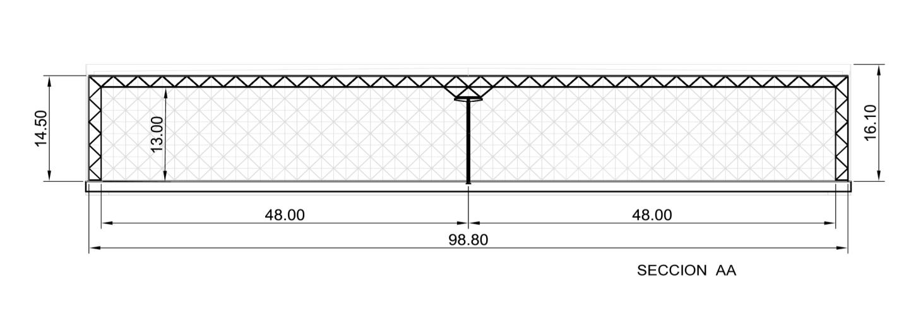
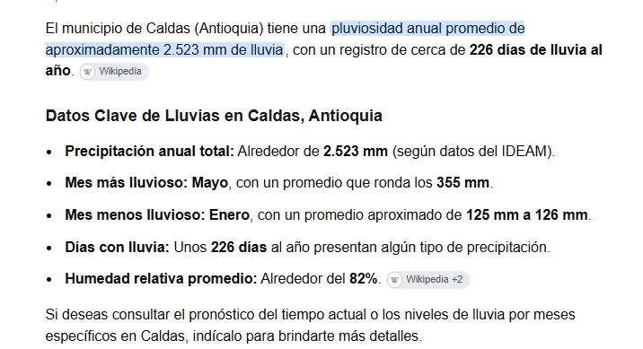
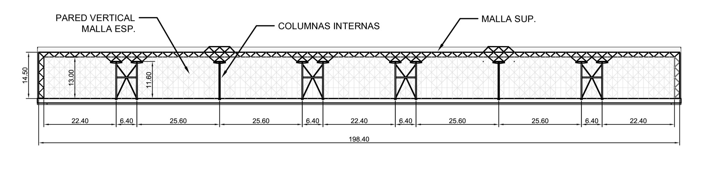
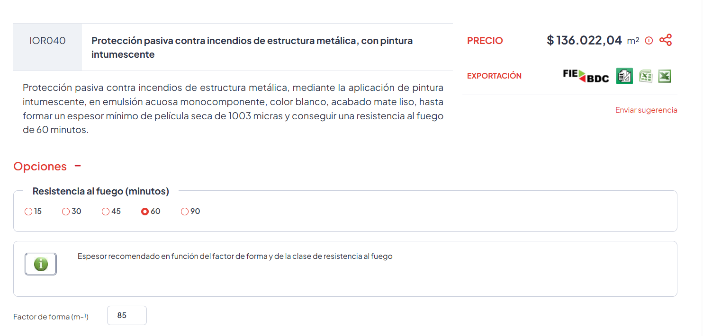
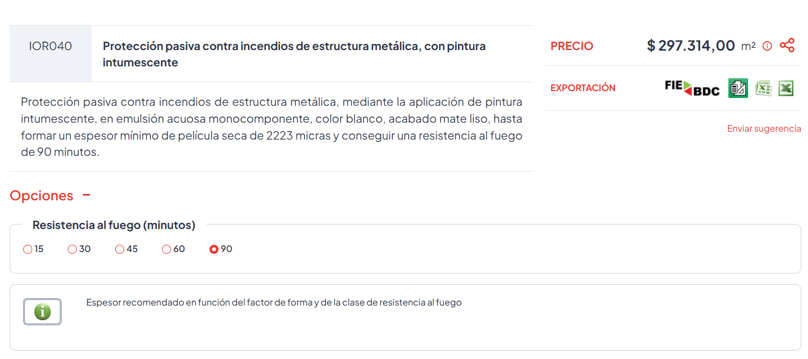
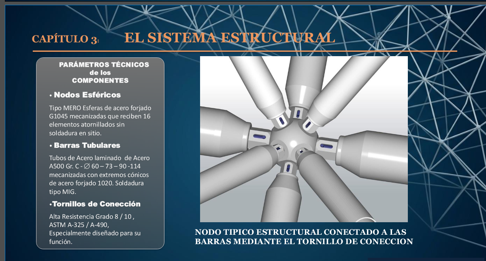
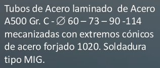
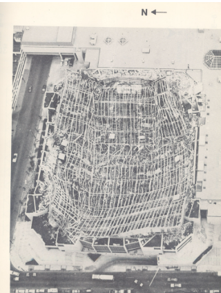

Estructuras
espaciales
Éxito
Bodega Éxito en Caldas: una cubierta de malla espacial galvanizada de 50.000 m² sobre 2.523 mm de lluvia al año, para un contrato ancla de 25 años. Informe general del sistema: geometría, agua, fuego, zinc y nudo, con las verificaciones previas a la recepción de la obra.
El peralte
decide
La ventaja del sistema es su regularidad: barras iguales, nudos repetidos, prefabricación. Esa ventaja se conserva solo si el módulo y el peralte se eligen para la luz.
El proyecto describe un módulo de 3,20 × 3,20 m con 1,54 m de peralte (1,80 m en otra lámina). La Sección AA muestra dos luces de 48 m con una línea de columnas al centro: 48 ÷ 1,54 = 31. Los 65 solo aparecen con una luz libre de 100 m (como dice la presentación comercial) o si falla la columna central (luz de unos 96 m: 62). La guía de Virginia Tech para mallas de doble capa trabaja con 7 a 15 (apoyo en bordes) y hasta 20 a 40 con muchos módulos.
Con el peralte típico, d = 0,707 a, las diagonales quedan a 45° y todas las barras miden lo mismo: 2,26 m para a = 3,20 m. El proyecto tiene 1,54 m, un 32 % menos, y la diagonal a unos 34°.

Cómo leer la relación luz/peralte
Se divide la luz L (la distancia que la cubierta salva entre apoyos) por el peralte d (la altura entre el plano superior y el inferior de la malla). Es lo mismo que el espesor de una viga: cuanto más alto es el peralte frente a la luz, más rígida y eficiente es la malla; cuanto más delgada, más se flecha y más fuerza reciben las barras.
Ejemplo de los planos: 48 m ÷ 1,54 m = 31 (zona amarilla). Con 100 m sería 65 (zona roja). Cada color de la barra es un rango de la guía de Virginia Tech:
- Verde, de 7 a 15. Rango usual para mallas apoyadas en los bordes.
- Amarillo, de 15 a 40. Solo con muchos módulos y verificación por modelo (se citan 20 a 40).
- Rojo, más de 40. Fuera de cualquier rango citado. Aquí caería una luz de 100 m, o la luz de 96 m si falla la columna central.
Los rangos son criterios de predimensionamiento, no normas. Las verificaciones salen del modelo del diseñador.
Otro módulo, otra luz
Vista lateral: el peralte que tiene y el que necesitaría
Corte a escala horizontal real; el peralte está exagerado 4 veces. La banda es el peralte para que L/d esté entre 20 y 40.
Llueve en el
62 % de los días
Una cubierta plana en Caldas no es defendible: la flecha de la malla, el drenaje obstruido y un aguacero intenso producen empozamiento, y la malla es liviana.
Los datos del lugar
Cerca de 2.523 mm de lluvia al año y 226 días con lluvia. Mayo es el mes más lluvioso (unos 355 mm) y enero el menos (unos 125 mm). Humedad relativa cercana al 82 %. Son datos secundarios: hay que contrastarlos con una estación del IDEAM.
Un precedente en Medellín
Según la experiencia de ICC, en la década de 1990 colapsó la cubierta de un centro de exposiciones de unos 90 m de luz, plana, por empozamiento y falta de mantenimiento. En el Pabellón Azul del mismo centro hubo que construir encima una estructura que diera pendiente, y esa carga obligó después a reforzar la estructura original. Dato aportado, por verificar en fuentes públicas.

Cuánto pesa el agua que se queda
En las combinaciones de la NSR-10 el empozamiento se mayora igual que la carga viva de cubierta: 1,2 D + 1,6 (Lr ó G ó Le). Con una estructura liviana, el agua puede gobernar el diseño de barras y nudos.
Pocas columnas,
R = 1,0
La malla es articulada y redundante ante cargas verticales, pero el viento y el sismo los resisten las columnas. Si hay pocas columnas y son del mismo sistema, redundancia e hiperestaticidad dejan de aplicar: una columna que falla compromete todo.
La NSR-10 asigna a estos sistemas R = 2,5, es decir, divide la fuerza del sismo por 2,5. Con esta obra y esta densidad de columnas, se recomienda diseñar elástico con R = 1,0.
Por qué la densidad de columnas pesa tanto
Los planos de la presentación (Sección BB, 198,40 m) muestran unas 10 columnas internas por nave de unos 20.000 m²: del orden de 2.000 m² por columna, con separaciones de 22,4 a 25,6 m, más cuatro pares de pórticos arriostrados y dos columnas sueltas en los ejes de 54,4 y 140,8 m. Cada columna recibe el sismo y el viento de una gran área tributaria, y si una falla la luz pasa de 48 a unos 96 m sobre el hueco (L/d ≈ 62). La redundancia de la malla ante cargas verticales no se traslada a la carga lateral.
El coeficiente R = 2,5 supone que el sistema se deforma y disipa energía sin colapsar. Con columnas escasas, una sola que falle compromete la cubierta, así que no se puede contar con esa reserva.

Sistema no convencional
El nudo gobierna la resistencia y la NSR-10 no lo contempla. La vía propuesta es el artículo 13 de la Ley 400, con autorización de la Comisión Asesora Permanente. Construir sin ella expone a una multa de unos 250 salarios mínimos al mes para 50.000 m² (art. 51).
Qué cambia el coeficiente de reducción
El zinc no
aísla del fuego
El baño galvanizado protege contra la corrosión, no aísla el acero del calor. Que la malla venga galvanizada no elimina la exigencia del Título J de la NSR-10.
Por qué decide el proyecto
En la NSR-10 una bodega es ocupación A (almacenamiento). El área máxima por edificio fija el tipo de construcción (Tabla J.3.1-1) y de ese tipo salen los minutos de resistencia al fuego (J.3.3-1). Con rociadores, un solo edificio de 50.000 m² supera el tipo moderado (40.000 m² de área total) y cae en el tipo alto.
¿En cuántos edificios se divide?
Límites con rociadores por edificio: moderado 13.300 m² (40.000 m² totales), bajo 7.200 (21.700), básico 3.600 (14.600). Separar edificios es una lectura técnica que debe confirmar un consultor de protección contra incendios y la curaduría. Falta definir si la malla se trata como cercha o como cubierta: cambia la exigencia.
Los pernos expuestos
Entre la barra y el nudo quedan pernos a la vista. En corrosión, la rosca expuesta es la zona crítica, y los A490 no se galvanizan en caliente. En fuego no se encontró una fuente que describa cómo protegerlos con intumescente: hace falta un ensayo del nudo completo (ISO 834 o ASTM E119) o un estudio por desempeño.
Si se usa intumescente sobre galvanizado, requiere un imprimante de enlace aprobado por el fabricante, preparación según ASTM D6386 y ensayos de adherencia (ASTM D4541 y D3359).
Calculadora de intumescente · modelo indicativo
- Gas ISO 834 (gris). Temperatura del aire caliente en el incendio estándar de ensayo: sube rápido y pasa de 900 °C hacia los 60 minutos.
- Acero sin proteger (rojo). Temperatura del tubo desnudo: alcanza al gas en pocos minutos porque el tubo delgado se calienta casi al instante.
- Con pintura (azul verdoso). Temperatura del acero con el espesor de intumescente indicado: la pintura se expande, aísla y retrasa el calentamiento.
- Temperatura crítica (naranja, discontinua). Temperatura a la que el acero pierde tanta resistencia que ya no soporta su carga. Depende del grado de utilización.
- Zinc se funde ≈ 420 °C (gris, discontinua). Hacia esa temperatura el galvanizado se derrite: la capa de zinc no protege del fuego.
- Línea punteada vertical. El tiempo de resistencia pedido (por ejemplo, 60 min). La pintura está bien dimensionada si la curva azul llega a ella justo por debajo de la temperatura crítica.
Modelo térmico simplificado (EN 1993-1-2, curva ISO 834), calibrado con la ficha R60 de CYPE (1003 µm a 85 m⁻¹). No reemplaza la tabla certificada del fabricante, que sale de ensayos (EN 13381-8, ASTM E119). Espesores de pared de los tubos asumidos. Precios de referencia, no cotizaciones.


El zinc es el
reloj
Mientras el zinc protege, la malla solo necesita inspección y retoques. Cuando se agota, empieza la corrosión del acero. Por eso los hitos y los costos del mantenimiento se ordenan según cuánto zinc queda.
La vida del zinc es el espesor dividido por lo que pierde cada año (ISO 9223). Para Caldas se recomienda categoría C3 como general y C4 en zonas de mayor exposición (condensación, humedad alta, aleros y nudos). Es una estimación: hay que medirla con cupones de corrosión (ISO 9226) desde el primer año.
El espesor lo fija el de la pared del acero (ISO 1461): 85 µm de zinc medio mínimo para más de 6 mm; 70 µm para 3 a 6 mm; 55 µm para 1,5 a 3 mm; 45 µm para menos de 1,5 mm. Con tubo de 2,5 a 3 mm, la fila que aplica es la de 55 µm.
Una pintura dúplex (pintura sobre zinc) prolonga la vida combinada entre 1,5 y 2,3 veces la suma de las dos vidas por separado.
Cuántos años rinde el zinc
Plan de mantenimiento por etapas de vida del zinc
Qué debe quedar escrito
- Un manual de mantenimiento aprobado antes de recibir la obra, con responsable, frecuencia, criterio de aceptación y registro por acción.
- La línea base de la estructura terminada: flechas, geometría, espesores de zinc y apriete. Sin ella no hay con qué comparar. En Hartford no se midió o se ignoró.
- Inspección anual los años 1 a 5 y cada dos años después (15 campañas en 25 años, 27 en 50), más inspecciones por evento: sismo, lluvia extrema, incendio, cambio de carga.
- Inspección específica de los pernos expuestos y de la holgura entre tornillo y esfera.
- Cada abertura nueva del cerramiento perimetral exige análisis y refuerzo de toda la estructura, y el mantenimiento aumenta de forma considerable.
- Los umbrales de intervención (espesor residual de zinc, pérdida de sección, flecha) los fijan el diseñador y el proveedor, no se improvisan en servicio.
Costos: orden de magnitud con supuestos
A: zinc más duradero (C3). B: escenario base C4 local. El repintado pesa cerca del 76 % del total a 50 años.
Diez ensayos
no certifican mil nudos
La resistencia de la malla la gobiernan los nudos. Si el proveedor asegura que mil nudos cumplen habiendo ensayado diez, eso no es un dato de ingeniería.


La tornillería
Los A325 se pueden galvanizar en caliente. Los A490 no: el hidrógeno los fragiliza (riesgo desde unos 33 HRC). El proveedor debe declarar clase, recubrimiento, espesor y ensayos de cada tornillo.
Normas
No hay norma estadounidense exclusiva de mallas espaciales: el nudo se califica por ensayos y se diseña con AISC 360. En Europa se usan EN 1993-1-8 y EN 1090; en China sí existen normas de producto para el nudo de esfera atornillada y su tornillo (JG/T 10, JG/T 203, JGJ 7).
Tres niveles que se exigen por separado
- Calificación del tipo de nudo, por laboratorio independiente.
- Control de cada lote de fabricación.
- Inspección del 100 % de las piezas por atributos: rosca, dureza, recubrimiento.
Cuántos ensayos hacen falta
Plan de cero fallas. Con la distribución hipergeométrica: ¿cuántos nudos se ensayan, sin ninguna falla, para afirmar que el lote cumple?
Si hubiera 50 nudos defectuosos entre 1.000, una muestra de 10 pasaría el 60 % de las veces. El lote real no es de 1.000: son unos 9.800 nudos y 39.000 barras (estimación para un módulo de 3,20 m).
El modelo ideal
no vio el colapso
18 de enero de 1978, 4:20 a. m. Se hundió la cubierta de malla espacial del Hartford Civic Center Coliseum, de unos 91 × 110 m. No había nadie: unas seis horas antes hubo un partido con unos 4.700 asistentes.

Qué supuso el modelo
Nudos ideales y arriostramiento cada 4,57 m (15 ft), cuando en los cordones exteriores era de 9,14 m (30 ft). Peso propio de 18 psf frente a 23 psf reales. Las flechas durante el izaje fueron del doble de las previstas y se explicaron como una discrepancia esperable. Tres firmas investigaron y no coincidieron en el mecanismo. El arreglo fue de 25 millones de dólares.
Un análisis lineal compara cada barra con la capacidad de una tabla. El no lineal incluye la amplificación P–δ, la plastificación, las imperfecciones y la cascada de redistribución cuando una barra pandea.
Capacidad de un cordón comprimido · ejemplo ilustrativo
Tubo Ø168,3 × 6,3 mm, fluencia de 250 MPa, fórmula de la secante. No es el elemento de Hartford (allí eran ángulos en cruz, aún más desfavorables): solo muestra el orden de magnitud.
Seis hitos
El interventor presenta evidencia y el cliente decide si se avanza. Un hallazgo sin responsable ni plazo no cuenta como gestionado.